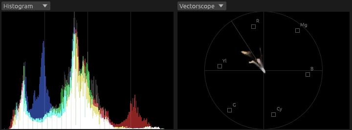

Fast playback and scrubbing
Hardware decoding, a timeline-wide frame cache, optional background proxies and playback up to 8x with pitch-preserved audio.
Venturi is a Linux-first, performance-oriented video editor written in Rust and hardware accelerated from decode to export. It focuses on editing, color and sound, and it is built to make that feel instant, even on modest hardware.

Venturi does little, and does it well.
Editing is where the time goes, so that is the part that has to be perfect: the cut, and the sound that goes with it. Venturi has the tools you actually reach for while editing, and nothing you have to wade through to find them.
That includes the color: balance a shot, match two cameras, give a video its look, with scopes to check it, right where you cut. When a job needs a full grading suite, Venturi speaks OpenTimelineIO in both directions.
Need them? Your timeline travels to a suite that has them.
A professional timeline workflow, designed around the gestures you repeat a thousand times per project.
Hardware decoding, a timeline-wide frame cache, optional background proxies and playback up to 8x with pitch-preserved audio.
Ripple delete that keeps every track in sync, compound clips, magnet snapping, copy/paste of properties and an unlimited, jumpable undo history.
A mixer with an effect chain per track: equalizer, multiband compressor, normalization, mono. Plus voiceover recorded straight onto the timeline.
Every parameter is keyframable: crop, zoom, rotation, position, speed, opacity, audio gain. A dedicated curve editor lets you shape the motion with custom curves, not just presets.
Applied straight from the timeline. No node graph to wire up, no detour to another page.
Timelines move in and out through OpenTimelineIO, tested with DaVinci Resolve.
Show the speed handles and drag a clip's edge: from 1% to 10,000%, with its linked audio following and, if you want, keeping its pitch.

Developed and tested on Linux, not ported to it. Also runs on Apple Silicon Macs.
A video is half audio. Venturi has a mixer with an effect chain on every track and on the master, and records your voiceover straight onto the timeline, so the sound doesn't need a trip to another program either.

Six bands you drag straight on the response curve, drawn over the live spectrum of what is playing. Low and high cut, shelves and bells, each with its own frequency, gain and Q.

Three stereo-linked bands split by Linkwitz-Riley crossovers that sum back to a flat response. Threshold, ratio, attack, release and gain per band, with live meters. Start from a preset, then save your own.

Every track and the master have their own strip: balance, solo, mute, fader and meters, and an effect chain in the order you choose. Clip gain is keyframable, and the same mix plays in the preview and lands in the export.
Arm a track with R and press Space: the microphone is recorded onto the timeline while it plays, with a live waveform. Takes are saved next to the project, as WAV, FLAC, MP3, AAC, Opus or Vorbis.
Bring the loudest peak of a channel to a target level, or fold a voice recorded on one side into both. One click each, no settings to learn.
Balance a shot, match two cameras or give the whole video its look without leaving the timeline. A color correction filter with wheels, scopes beside it, and a pipeline that keeps gradients smooth however many effects you stack.
Shadows, midtones, highlights and offset, each with its own color, luminance and saturation, and ranges you can move. The wheels read like a vectorscope, respond gently near the center and lock the pointer while you drag. Every control is keyframable.
One click finds the surfaces that should be neutral, a wall, a white shirt, a sheet of paper, and turns them grey, solving shadows, midtones and highlights together. A big colored object doesn't fool it.
Waveform, RGB parade, vectorscope with skin tone line and histogram, two at a time in the Color window, right above the wheels. They measure the clip you are grading, not what covers it.

Every layer, filter and blend is computed in 16-bit float and dithered once on the way out, so a chain of effects never bands. An 8-bit mode stays available for modest GPUs.
Drop the preset on a clip and it desaturates, keeping the rest of its grade.
Paste attributes copies a clip's grade onto others, keyframes included: grade one shot of a camera, then the rest.
Correct one part of the frame through a mask, or every clip below an adjustment clip at once.
Written in Rust, with one GPU stack for both the interface and the compositor: Vulkan on Linux, Metal on macOS. Every design choice aims at one thing: the playhead never waits for you.
A background thread walks the timeline ahead of you, across cuts, gaps and tracks, filling a frame cache with a global memory budget. Eviction drops the frames farthest from the playhead first. The blue bar on the ruler shows what is already decoded.

Crop, zoom, rotation and position are evaluated at runtime and sent to a wgpu shader as uniforms. They are never baked into cached frames, so dragging a slider costs nothing.
All-intra H.264 proxies generated in the background make long-GOP footage scrub smoothly. Export always reads the original sources.
The mixer drives the playhead and the video chases it, so picture and sound never drift. Mismatched frame rates are conformed, not stretched out of sync.
Decoding, compositing and encoding can all run on the hardware your machine already has. Venturi picks the GPU decoder on its own, the export window offers every hardware encoder it finds, and anything the GPU can't handle falls back to software.
| Decode | Compositing | Encode | |
|---|---|---|---|
| NVIDIALinux | NVDECVulkan Video | Vulkan | NVENCVulkan Video |
| Intel & AMDLinux, Mesa | Vulkan Video | Vulkan | Vulkan Video |
| Apple SiliconmacOS | VideoToolbox | Metal | VideoToolbox |
| Fallbackany machine | FFmpeg, multithreaded | always on the GPU | x264 |
Decoding on NVDEC took a tenth of the CPU time of software decoding in our benchmark. On hybrid laptops Venturi decodes on the integrated GPU, so the discrete one stays asleep.
A hardware decoder opens a clip and delivers its first frame in 29–52 ms, against 126 ms in software: jumps and cuts feel immediate.
The composed frame goes straight from the GPU texture into the interface, without a copy back to memory. On export the colour conversion runs in a compute shader before the encoder.
Measured with NVDEC on a heavy HEVC clip (4516×1080, 60 fps) on the development machine. Hardware decoding is on by default (Settings > Playback). Export uses NVENC by default on NVIDIA, and lets you pick any decoder and encoder the machine has.
Venturi speaks the Model Context Protocol. An agent such as Claude Code can import media, build and cut timelines, add titles, look at frames, measure audio and export, through the same editing code the UI uses.
# register Venturi once $ claude mcp add venturi -- vv-app mcp --attach # what the agent does import_media talk.mp4 ✓ 25 fps · 04:12 insert_clip → timeline "Talk" ✓ get_audio_levels frames 0–6300 ✓ 41 pauses < -50 dB delete_ranges ripple: true ✓ A/V in sync render_frame around each cut ✓ looks clean export talk_cut.mp4 ✓ done # not happy? one undo puts it all back
Venturi's color correction covers the grade most videos need. It works on 8-bit decoded sources, though: for 10-bit footage, node-based grading and finishing, a dedicated suite still goes further. Timelines travel in both directions through OpenTimelineIO, so Venturi slots into the pipeline you already have.
DaVinci Resolve is a trademark of Blackmagic Design Pty Ltd. Venturi is an independent project, not affiliated with or endorsed by Blackmagic Design.
The Venturi effect: when a fluid passes through a constriction, it doesn't slow down. It speeds up.
Tight constraints make Venturi faster, so your edits stay fluid even on modest hardware. Saying no to a node editor and node-based grading is what lets the editing feel instant.
Prebuilt packages with FFmpeg bundled. Free and open source under the GPL.
A single AppImage, no installation. Needs a Vulkan driver.
$ chmod +x Venturi-*.AppImage $ ./Venturi-*.AppImage
A disk image for Apple Silicon Macs. The app is ad-hoc signed, not notarized: clear the quarantine before the first launch.
Apple Silicon (.dmg)$ xattr -dr com.apple.quarantine \
/Applications/Venturi.app
Rust 1.88 or newer and the FFmpeg development libraries. The full guide covers every platform.
Build instructions →Issues and pull requests are welcome. The architecture is documented, the conventions are written down for humans and coding agents alike, and CI runs the same checks you run locally.